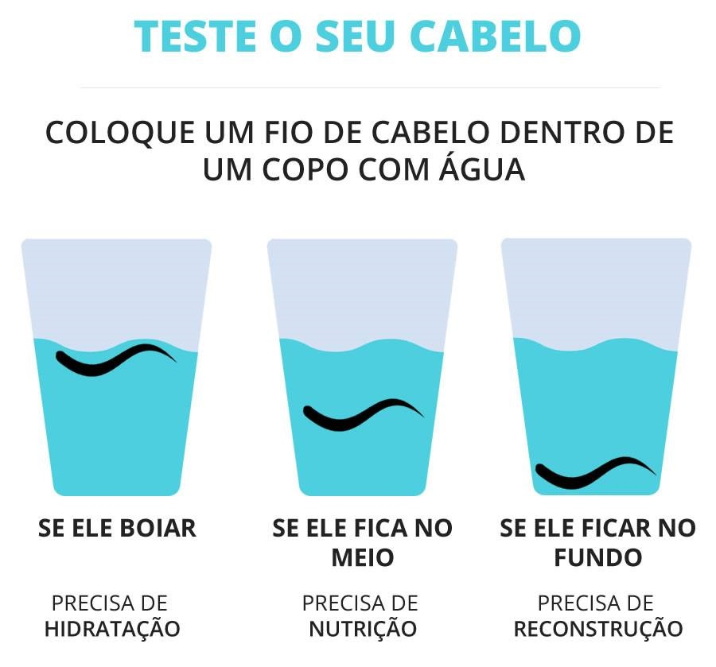
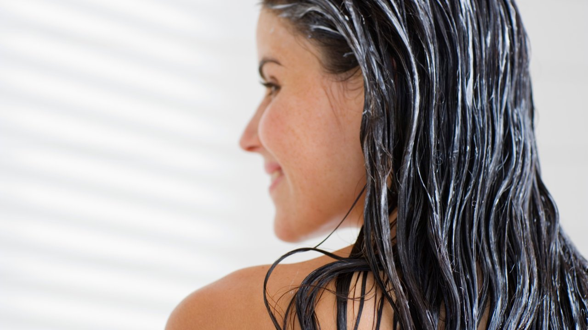
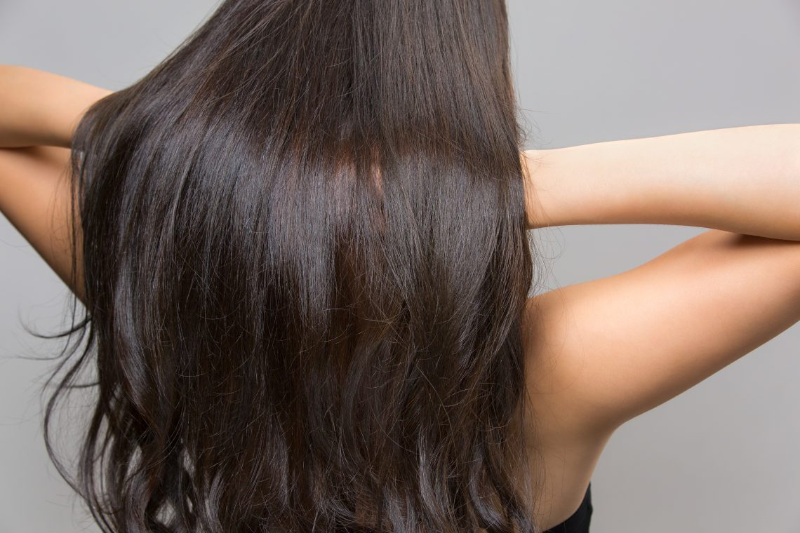

♥ Como hidratar o cabelo? ♥
Que tal aprender como hidratar o cabelo em casa e não precisar gastar aquela grana no salão de beleza?
Além de economizar, o que é sempre ótimo, você consegue fazer o procedimento no conforto do seu lar.Fora que a hidratação pode se tornar um momento de prazer e autocuidado no dia a dia.mesmo que o cabelo não contenha química, os fios também podem danificar e perder água, ou seja, desidratar, por conta de fatores externos como o Sol, vento, poluição, água quente e uso incorreto de secadores, chapinhas ou babyliss.
Para hidratar o cabelo o ideal é sempre repor a água perdida fazendo o tratamento de hidratação pelo menos 1 vez na semana.Em cabelos muito ressecados ou danificados, é recomendado até 2 vezes na semana, até que os fios se reestabeleçam. E isso tudo pode ser feito em casa.

♥ Como hidratar o cabelo ressecado? ♥
O cabelo ressecado pode ser identificado pela falta de brilho e pela textura mais áspera, principalmente nas pontas.Os fios também ficam mais frágeis e mais quebradiços, dificultando o crescimento. Vale lembrar que o ressecamento pode ser causado por agentes externos, como o Sol e o cloro, assim como por deficiências nutricionais.

♥ Uma das formas de combater o ressecamento é através da hidratação dos fios. Alguns passos abaixo: ♥
1º passo –
Lave normalmente os fios com o shampoo, de preferência que possua função hidratante. Lembre-se sempre de enxaguar bem para não deixar resíduos do produto nos fios.
2º passo –
Após o enxágue, passe o seu creme ou máscara de tratamento preferida ao longo dos fios. Nunca aplique o produto na raiz dos cabelos, principalmente se o seu cabelo for oleoso.
3º passo –
Depois da aplicação, utilize um pente ou uma escova para espalhar bem o produto nos fios.
4º passo –
Se desejar uma hidratação ainda mais potente, coloque uma touca térmica para potencializar a ação do seu creme de hidratação.
5º passo –
Deixe o produto agir por, pelo menos, 5 minutos. Atenção: nunca ultrapasse o tempo recomendado no rótulo do produto.
6º passo –
Enxague os cabelos e retire o creme por completo.
7º passo –
Após o enxague, se você preferir, aplique um condicionador.
8º passo –
Remova-o logo em seguida. Dê preferência pela água fria, pois ela fecha as escamas dos fios, deixando-os ainda mais brilhantes.
9º passo -
Por último, aplique um finalizador de sua preferência.
10ºpasso –
O último passo é simples: passe um protetor térmico ao longo dos fios e seque o cabelo com secador ou, se preferir, deixe os fios secarem naturalmente.
